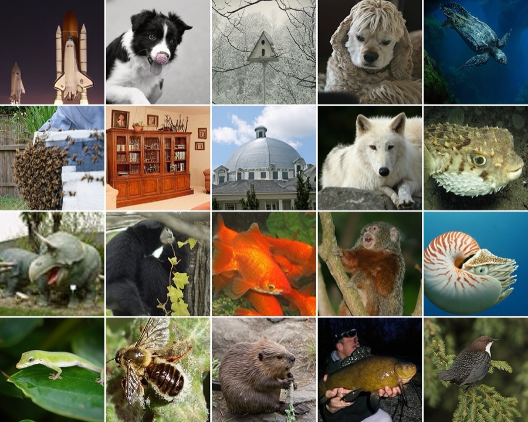
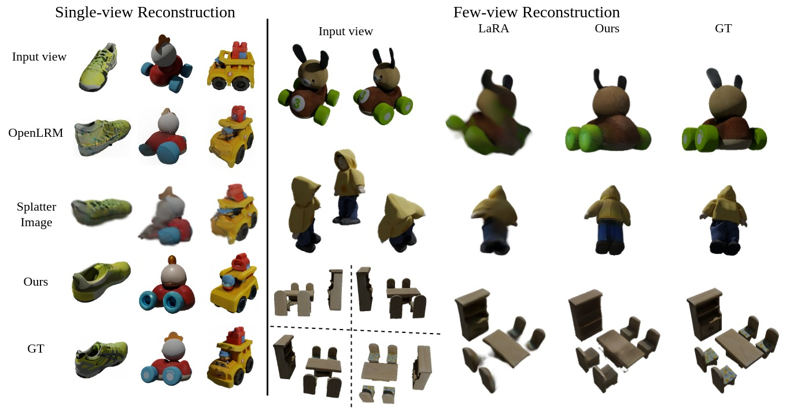

Efficient Image Synthesis with Sphere Latent Encoder
arXiv preprint, 2026
Few-step image generation by decoupling encoding from denoising in a spherical latent space.
I am currently a master’s student in Computer Vision at MBZUAI, under the supervision of Prof. Hao Li. I was a research resident at Qualcomm AI Research (formerly VinAI), advised by Prof. Binh-Son Hua (primary) and Dr. Rang Nguyen (secondary).
Before that, I received a B.Eng. in Computer Engineering from the University of Information Technology - VNUHCM.

Few-step image generation by decoupling encoding from denoising in a spherical latent space.

Harmonizing diffusion-based depth estimation and metric depth estimation.

Large reconstruction model with 2D diffusion model.